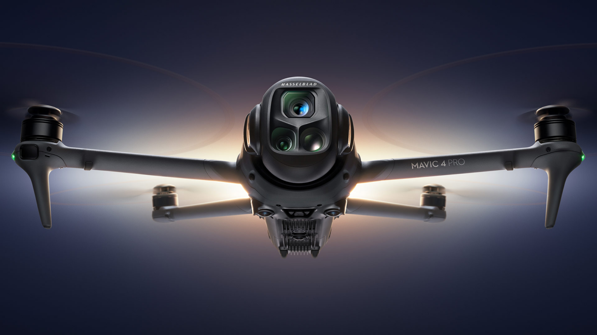

Industry-Leading Tools. Uncompromising Precision.
AEROSPARKe operates a fleet of professional-grade drone platforms, LiDAR sensors, GNSS systems and GIS software — giving every project the technical foundation it needs to deliver survey-grade results.

Enterprise-grade aerial workhorse
DJI Matrice 350 RTK
Our primary survey drone — 55-minute flight time, IP55 weather resistance and a triple-redundant flight control system.
Key Highlights

Next-generation airborne LiDAR
Zenmuse L2 LiDAR
Integrated LiDAR and RGB imaging system delivering dense point clouds with up to 5 returns per pulse, even through vegetation canopy.
Key Highlights

Precision thermal intelligence from the air
Mavic 4 Thermal
Simultaneous RGB and infrared capture for solar panel inspection, power line surveys, industrial monitoring and search-and-rescue.
Key Highlights

Centimetre-level ground truth
RTK / GNSS Ground Systems
Professional multi-constellation receivers for GCP placement, base station setup and independent accuracy verification.
Key Highlights

From raw data to intelligent deliverables
GIS & Processing Software Suite
Industry-standard platforms trusted by survey professionals and government agencies worldwide.
Key Highlights
What Our Technology Enables
Centimetre Accuracy
RTK/PPK workflows deliver absolute positional accuracy of 1–3 cm without ground control points.
Vegetation Penetration
Multi-return LiDAR captures bare-earth terrain beneath dense forest and crop canopy.
Thermal Analysis
Radiometric thermal imaging quantifies temperature anomalies for energy and industrial inspection.
Large-Area Coverage
A single Matrice 350 RTK mission can cover 500+ hectares per day at survey-grade accuracy.
All-Weather Operations
IP55-rated platforms and redundant systems enable operations in rain, wind and challenging conditions.
Seamless Data Integration
Outputs integrate directly with ArcGIS, AutoCAD Civil 3D, BIM platforms and web GIS portals.
Want to Know More About Our Equipment?
Our team is happy to discuss which platform and sensor combination is best suited to your project requirements.
Talk to Our Team